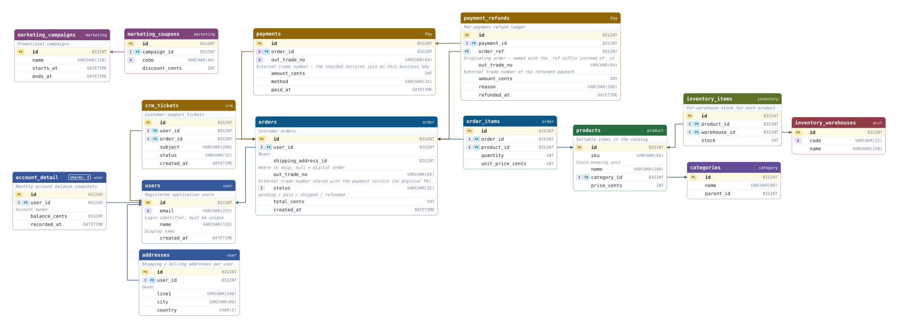

三种入口，直接开始
- 新会话显示空画布引导：查看示例、拖入 SQL / DDL、拖入工作区存档。
- 当前标签页已有工作区时直接恢复，不再显示引导；示例只在你选择后加载。
读懂表关系，整理业务模块，记录评审意见。
从一份 DDL，到可以继续协作的完整评审现场。

实际导出的电商示例 · 完整关系预览，字段细节可在大图中放大查看。
查看大图 · SVG（新标签页） ↗围绕进入工作区、阅读表结构、组织模块和移动画布，补齐日常使用中的细节。
以上对应当前在线版；离线版功能以 Releases 发布说明为准。已有工作区存档继续兼容。
不是又一个 ER 设计工具。它覆盖的是完整评审闭环：读懂关系 → 补全关系 → 写下意见 → 导出文档。
命名后缀 + 类型一致 + 索引优先 + 复合前缀兜底，给出 high / medium / low 三档置信度，每条都附"推断理由"，支持逐条接受或拒绝。
识别 orders_0..orders_31 这类按尾号水平分片的同构表，合并为单一逻辑表，避免推断阶段产生分片之间的噪声边。
自动聚类业务模块，也可多选表移入已有或自定义模块。八套配色适配日常阅读、演示与打印，单个模块可自选颜色；颜色编辑器明确显示色板来源。
没有后端、上传或 telemetry，DDL 只留在浏览器里。可构建为包含所有依赖的单个 er-diagram-viewer.html，双击即用，内网、U 盘和 wiki 附件场景都能离线运行。
推断不到的关系，直接从字段两侧的触点拖一条折线到目标字段：落在主键/唯一列记为物理外键，否则记为逻辑关联，松手即成、无需确认。支持批量选删、类型批量切换，同表关系走同侧折线回环。
分库分表没有物理外键？扫描 out_trade_no 这类跨表共享的业务键，由你勾选用哪些字段推断，生成无向点状关联线——不污染模块聚类，DDL 里以 -- LOGICAL: 注释留痕。
逐字段记录命名、类型和约束建议，区分建议 / 警告 / 阻塞与处理状态。右侧浮层汇总并定位问题；批注随会话恢复，也能存入工作区文件。
三种产出物：已确认 FK 的 ALTER TABLE 脚本、表删除决策与字段意见均以表格留痕的评审报告、遵循标准结构的《数据库设计说明书》。外加 PNG / SVG 图面材料。
阅读模式锁定布局，编辑模式开放调整。Alt 水平移动、Shift 纵向精调；多选等宽、对齐、均匀分布配有 SVG 图标，字段名前的握柄可拖动排序。
在现有 DDL 上追加表或字段时，保留卡片位置、宽度、字段顺序、手工路由、视口、模块和评审记录，只把新增表放到右侧。分片表合并改名也能延续原评审现场。
平移、缩放和拖表只更新必要的卡片几何与连线。滚动、搜索跳转和模块定位也有实时 FPS 反馈，统一显示在底部中央，移动停止后自动收起。
合并多个 .erreview，保留各来源内部布局和手工路由。SQL、批注、自定义模块与颜色一并存档；可选密码保护，继续兼容旧版未加密文件。
外键连线走正交折线、自动避开表体，可拖拽线段中点手动微调走向。Delete 把噪声表丢进左下角回收站、随时还原，导出同步排除。
画布右键直接放大、缩小、全览和显示/隐藏网格，底部按 15%～100% 六档缩放。搜索可切换「全部 / 仅表名 / 仅字段名」，回车在结果间跳转，画布自动跟随。
.erreview 恢复评审现场；加密文件输入密码，多个文件进入合并预检。当前标签页已有会话存档时，直接恢复工作区，不显示新手引导。
打开在线工作台，无需安装或注册。
需要离线使用？从 Releases 下载 er-diagram-viewer.html，双击即可打开，适合内网和 U 盘分发。
工作区只在当前浏览器中处理。需要跨会话留存或交给同事时，请导出 .erreview 文件。
# 克隆仓库并启动 git clone https://github.com/lifefitting/er-diagram-viewer.git cd er-diagram-viewer bun install bun run dev # 构建可静态托管的产物 bun run build # → ./dist bun run build:single # → ./dist-single/er-diagram-viewer.html
每个版本解决一层问题：先看清，再评审，最后让迭代不必返工。
SQL DDL 秒级解析成 ER 图；没写 FOREIGN KEY 也能按命名 + 类型 + 索引推断外键，逐条确认。
可编辑画布：多选拖动、正交避障布线、连线微调、回收站、搜索跳转，布局与视口跨刷新保存。
平行连线自动分道、布线质量度量护栏；稀疏 schema 导入不再空白画布。
字段拖线补关系、业务键逻辑关联扫描、逐字段评审批注（带时间戳），导出评审报告与数据库设计说明文档。
保布局合并多工作区，批量调模块与精准对齐分布；明确区分阅读/编辑模式，存档加密同时兼容旧格式。
追加 SQL 保留布局、路由与评审记录；字段可拖拽排序，画布右键快控与六档缩放让日常操作更直接。版本从 v0.3.3 直接跃迁。
覆盖层按帧增量同步，拖动只重算受影响连线；交互期间实时反馈 FPS。三入口引导、普通屏幕文字优化与自定义模块配色，让评审更顺手。
它不与 dbdiagram.io / drawSQL 这类"协作型 ER 设计工具"竞争——它们帮你画新库， 这里帮你评审存量库：读懂、补全、批注、出文档，一条龙在浏览器里完成。
| 维度 | ER Diagram Viewer | dbdiagram.io | drawSQL | DBeaver / Navicat |
|---|---|---|---|---|
| 输入形式 | SQL DDL | 自有 DSL | 拖拽 GUI | 实库连接 |
| FK 自动推断 | ✓ 核心能力 | — | — | — |
| 分片表合并 | ✓ | — | — | — |
| 模块自动着色 | ✓ | — | 手工 | — |
| 业务键逻辑关联 （分库分表无物理 FK） |
✓ 扫描 + 手动 | — | — | — |
| 字段拖线补关系 | ✓ 连完即所得 | 改 DSL 源码 | 拖拽建模 | 改库 |
| 字段评审批注 | ✓ 带时间戳 | — | 评论（付费） | — |
| 评审报告导出 | ✓ Markdown | — | — | — |
| 数据库设计说明文档 | ✓ 标准格式 | — | — | 部分支持 |
| 增量 SQL 保留评审现场 | ✓ 布局 + 路由 + 决策 | — | — | — |
| 多工作区保布局合并 | ✓ 合并预检 + 整组避让 | — | — | — |
| 工作区密码加密 | ✓ AES-GCM | SaaS | SaaS | — |
| 离线 / 隐私 | 完全本地 | SaaS | SaaS | 需连库 |
| 价格 | 免费 · MIT | Freemium | $19+/月 | 商业版收费 |